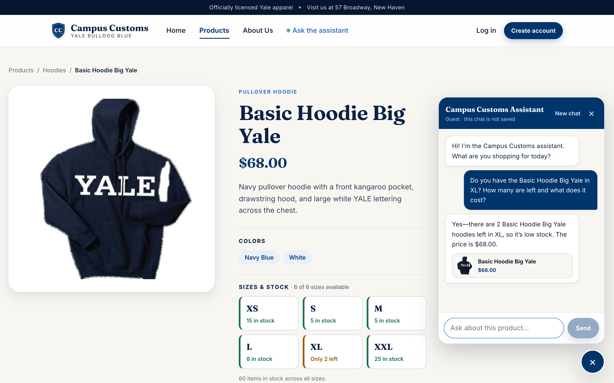
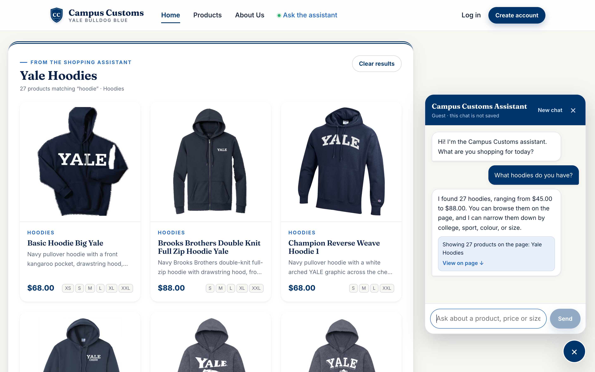
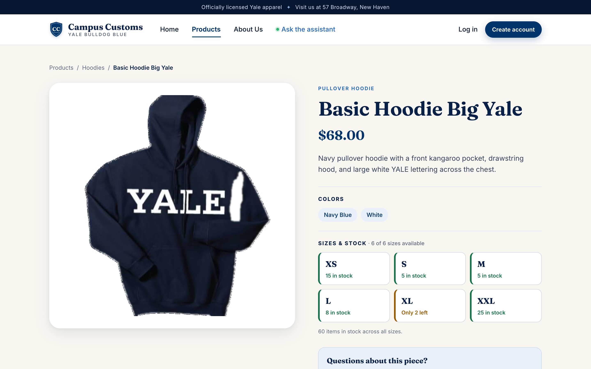
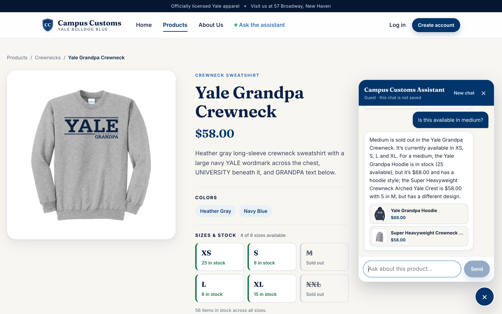

Chatbot checks an item’s stock and price from the database
PASSAsked on the product page, the assistant looked up the real inventory and answered “2 left in XL … $68.00”. That matches the database (XL = 2, price $68.00) and the size boxes on the same page.

Question typed into the chat
“Do you have the Basic Hoodie Big Yale in XL? How many are left and what does it cost?”
Assistant’s real reply
Yes—there are 2 Basic Hoodie Big Yale hoodies left in XL, so it’s low stock. The price is $68.00.
Checked against the database
| Product | Basic Hoodie Big Yale |
|---|---|
| Price in catalogue table | $68.00 |
| XL quantity in inventory table | 2 |
| All sizes | L=8, M=5, S=5, XL=2, XS=15, XXL=25 |
| Result | Reply states $68.00 and 2 in XL: matches |
Category question puts matching product cards on the page
PASSAfter “What hoodies do you have?”, the API returned structured search results and the page showed product cards with real photos, names, prices and short descriptions. All 27 cards match the 27 hoodies in the database, and clicking a card opens its product page (second screenshot).


Question typed into the chat
“What hoodies do you have?”
Assistant’s real reply
I found 27 hoodies, ranging from $45.00 to $88.00. You can browse them on the page, and I can narrow them down by college, sport, colour, or size.
Checked against the database
| search_results returned by the API | title “Yale Hoodies”, query “hoodie”, category Hoodies, total 27 |
|---|---|
| Cards shown on the page | 27 |
| Hoodies in the database | 27 |
| Card clicked | /products/basic-hoodie-big-yale opened its detail page |
| Result | Same 27 products, ID by ID: matches |
Usability improvement (Problem 9): in-stock alternatives when a size is sold out
PASSOn the Yale Grandpa Crewneck page, “Is this available in medium?” used the page context and the find_alternatives tool. It said clearly that M is sold out, then offered real in-stock options and explained how each differs (price, style, design).

Question typed into the chat
“Is this available in medium?”
Assistant’s real reply
Medium is sold out in the Yale Grandpa Crewneck. It’s currently available in XS, S, L and XL. For a medium, the Yale Grandpa Hoodie is in stock (25 available), but it’s $68.00 and has a hoodie style; the Super Heavyweight Crewneck Arched Yale Crest is $58.00 with 5 in M, but has a different design.
Checked against the database
| Page open | /products/yale-grandpa-crewneck |
|---|---|
| Grandpa Crewneck M quantity | 0 (sold out) |
| Alternatives offered (M stock, price) | Yale Grandpa Hoodie (M = 25, $68.00), Super Heavyweight Crewneck Arched Yale Crest (M = 5, $58.00) |
| Result | Original M is sold out; every alternative has M in stock: matches |